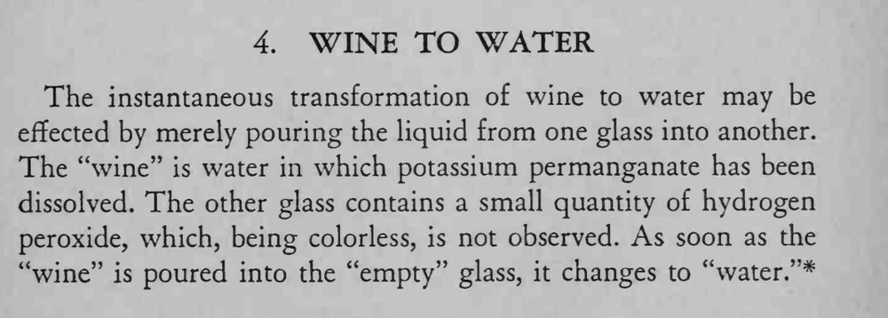

把一杯葡萄酒色的液体从一只杯子倒进另一只空杯，液体在倒入的瞬间变成了清水。
液体不能饮用，表演后不要让人尝。

The instantaneous transformation of wine to water may be effected by merely pouring the liquid from one glass into another. The "wine" is water in which potassium permanganate has been dissolved. The other glass contains a small quantity of hydrogen peroxide, which, being colorless, is not observed. As soon as the "wine" is poured into the "empty" glass, it changes to "water."*